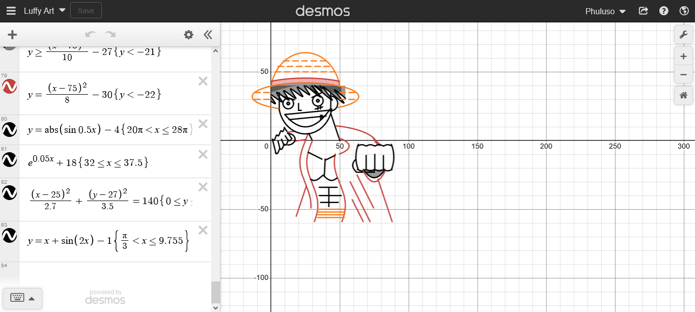
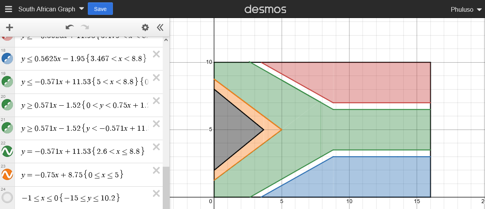

Mathematics Section
No intro here let's get straight to business
- Mathematics and Psychology
- Mathematics and Love
- Mathematics and Medicine
- Mathematics and Geography
- Mathematics and Politics
- Mathematics and Economics
- Convergence and Equilibrium
- My Graph Art
Mathematics and Psychology
Weber -Fencher laws in psychometrics
If you are carrying 100 books and someone adds 1 book to your load you probably wouldn't notice the difference vs if you were carrying just one book right? That's what the Weber-Fencher laws tell us regarding stimulus as a whole. The Weber law says in order for us to tell the difference, there has to be a 2% change in the stimulus, for example if there's 10 spoons of sugar in a cup of tea, you have to add 0.2 of a spoon to feel any change, if there is 100 however you have to add 2 spoons, if you add one you won't feel a difference according to the theory. And it accounts for all other sensations too, hearing, seeing, smelling and touching.

Then there's the Fencher method which says there's a logarithmic relationship between the perceived strength and the stimulus strength, hence the change in perceived stimulus declines the stronger a stimulus gets since the derivative of log(x) declines for positive values. kind of like diminishing marginal utility. Economists have also used these theories to study some consumer behaviour
The exponential model of memory retention
According to many psychologists, the ability to retain what you just learned declines quickly at first then levels off as time goes on. According to a Wixted and Besen study of 1991 it can be represented by an exponential model p=aexp(-bx) where p is the probability of a person being able to correctly recall an item learned. X is the time since learning it. And 0< a< 1 being the baseline retention before time passed, b>0 is the rate of retention drops with time, if your b is lower your probability of retention drops at a lower rate. So don't start studying the day before your exams basically.

Mathematics and Love
The exponential model of memory retention
If you were to ask someone of the relationship between maths and love they'd probably tell you about how much they hate it…( I swear the joke sounded better in my head). Anyway…:.
There's a formula for the socially acceptable dating age difference between men and women and it is Age/2+7. So if a person is 30 the youngest person they should date is 30/2+7=15+7=22. The formula is a y=mx+c type graph hence the acceptable age difference keeps rising the older the 2 people are as you can see from the graph.
Apparently this formula has been around since the early 1900s however, it was not meant to be for the youngest age a person should date like it's used today, but the ideal age of a partner for a man, which is interesting. Studies have shown it's fairly accurate but only when the man is the older person. According to a USA study from 2017 a huge majority of married couples in the US have an age gap of 1-3 and that is more common in many other countries too.
Mathematics and Medicine
Computed Tomography
Computed Tomography scanner, commonly known as CT scanning is a radiographic imaging technique that generates cross sectional images of organs and tissue structures. An X-ray tube rotates, scans and performs measurements from different angles which is then sent to a computer that does a mathematical algorithm and solves a certain integral then gives results, it is used for diagnosing patients and with checkups. Maths used includes the radon and the fourier transform, fourier slice theorem, some numerical methods and other mathematical techniques.
 (Image source: https://en.m.wikipedia.org/wiki/CT_scan)
(Image source: https://en.m.wikipedia.org/wiki/CT_scan)Mathematics and Geography
Global positioning system
Global positioning system also known as GPS, helps solve the main problem of navigation with maps, which is where you are on the map. It uses trilateration which is based upon measuring distances, using geometry and trigonometry. Satellites transmit radio signals containing time the signal was sent and the location of the satellite, the signals are then received by GPS receivers like our phones. Since the electromagnetic waves travel through the speed of light they arrive after a certain time duration, We find the distance by multiplying the speed of light and the time it took the signal to arrive[d=S×(received time-sent time). Then spherical geometry and 2 other satelites is used to find the position of the GPS.
4 satellites are actually needed because there's a time offset between our phones and atomic clocks used by satellites. So a 4th satellite and some calculus is used to calculate the offset time. Satellites are placed in a way that we can access at least 4 wherever we are which is pretty cool. Einstein's theory of relativity also plays a factor since satellites orbit the earth at really fast speeds and experience less of the earth's gravity which affects their atomic clocks. These conditions are however integrated to the computers that do these calculations thus accounting for the rates of the atomic clocks. If this wasn't done there'd be an added error of 10km every day which is crazy to think about. Mathematicians, engineers and scientists are the real unappreciated heroes of our modern world honestly.
Mathematics and Politics
Global positioning system
the median voter theorem states that political parties that cater to the median or average person in a group of people are more likely to win, because if for example a party tries to cater too much to the rich people they might lose voters from the poorer group and if they cater to the poor they'll lose votes from the rich, but if they cater to the middle persons though they'll get votes from middle people, some votes from rich people and some from the poor who are willing to compromise vs a party that only caters to and gets votes from one side. It's not just rich and poor that play a factor to who the middle person is but also a wider range of ideologies and/or policies. I learnt about this little theory in second year economics and it also applies to businesses too, sometimes even movies. The model has some obvious flaws though that I won't get into, but you can go and learn more about it if you're interested.
Mathematics and Economics
Convergence and Equilibrium
My Graph Art
